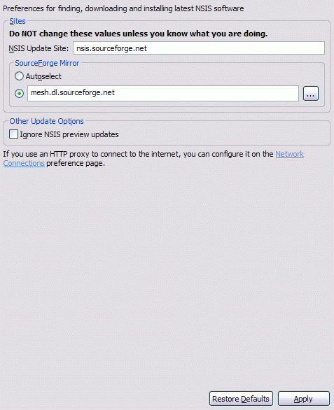
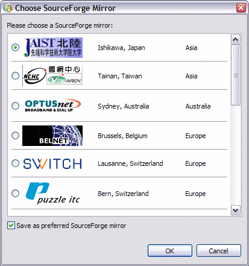

Preferences
NSIS Update
These preferences are used to configure NSIS Update behavior.
Please see the important notes regarding NSIS Update.

- HTTP Proxy
- If an HTTP proxy is used to connect to the update sites, it can be configured here. A HTTP proxy host name (required) and port (optional) may be specified. If the proxy host port is not specified, the default port (80) is used. ← Back
- Sites
- These are the sites to which NSIS Update connects to find and download updates. These values should NOT be modified manually unless it is certain that the new values are correct.
- NSIS Update Site
- This is the site which is checked to see if updates are available..
- Sourceforge Mirror
- Since the NSIS project is hosted by SourceForge, updates can only be downloaded from SourceForge mirrors. The recommended setting is to allow SourceForge to auto-select the mirror to use. However, if desired, the user may select the preferred SourceForge mirror to be used. This can be done by either manually entering the SourceForge mirror site or by choosing it by clicking on the browse button. The mirror site may be a host name or an IP address, however it should not include protocol, port or path information. e.g., belnet.dl.sourceforge.net is valid, but http://belnet.de.sourceforge.net:80/nsis-2.22-setup.exe is invalid.
If NSIS Update is unable to download from either the auto-selected or the user-selected mirror for any reason, it will prompt the user to choose a different SourceForge mirror. The new mirror can also be saved as the preferred mirror if desired.

- Ignore NSIS Preview Updates
- If this option is selected, NSIS preview updates will not be considered for download and install. The default behavior is to accept any available NSIS update, whether it is a release or a preview. ← Back
Previous | Contents | Next
Copyright © 2004-2006 Sunil Kamath (IcemanK).